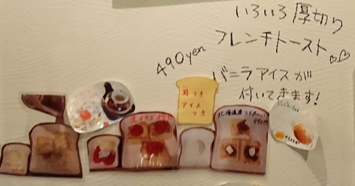
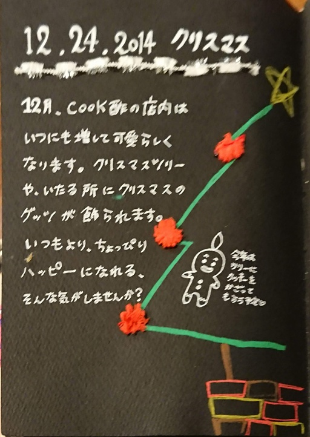
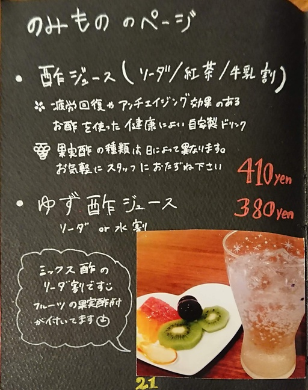
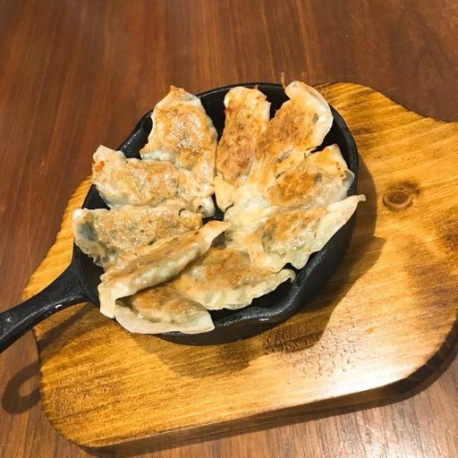
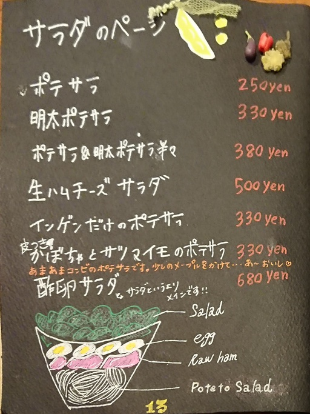
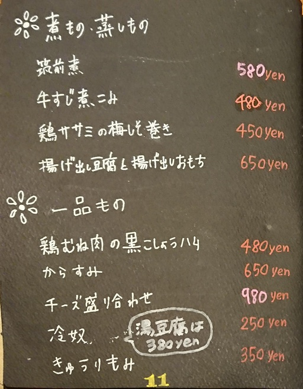
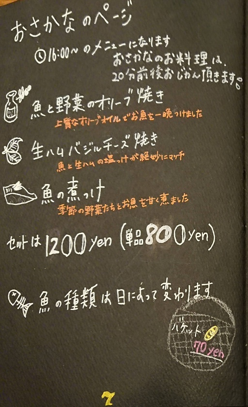

はじめに
どのような料理なのかイメージしやすいように、タブレットのメニューをご用意しました。参考になると嬉しいです。
なお、クック酢のお料理は、芯付き、皮付きのことがあります。芯や皮の部分に栄養や甘味があるからです。
それではごゆっくりお過ごしくださいませ。
NEW メニュー

秋刀魚とトリッパのトマト煮・・・980円
- 秋刀魚の塩焼き・・・・・・・・・500円
- 戻りカツオのレアカツ・・・・・・900円
塩でどうぞ - 手作り豆腐・・・・・・・・・・・380円
塩とオリーブ、ねぎと生姜、かつおぶしが付いています。
おすすめの一品

ロールレタス(写真はキャベツです・・・)
- ロールレタス・・・・・・・・・・680円
- ロールチーズ・・・・・・・・・・380円
ロールチーズはレタスの中にチーズが入っています。
ねぎバーグ・・・680 yen(ネギ感がアップしました)
鹿児島南国ポークの背脂をカリカリに炒めて乗せました。
ソースは、トマトか大根おろしをお選びください。
レンコンバーグ、ごぼうバーグもできる場合もありますので、スタッフにお尋ねください。
明石焼風たまご焼き ・・・680 yen
焼きなすも付いてます。
ヤゲンなんこつとポテトフライ・・・580 yen
スタッフによると「まじヤバ」だそうです。
フランスパンのフレンチトースト(単品650yen/SET750yen)だけでなく、ふわふわ食パンのフレンチトーストがメニューに加わりました。
ココナッツオイルで焼いています。

ふわふわのフレンチトースト・・・490 yen
撮影の都合3切れですが、実際には4切れです。

餃子(6個)・・・290 yen
オシャレな餃子を

トリュフ塩 or 酢胡椒でどうぞ

オープンオムレツ
- 新じゃがと厚切りベーコンのオープンオムレツ・・・680yen
- タコとオレガノのオープンオムレツ・・・・・・・・680yen
- 牛肉と新玉ねぎのオープンオムレツ・・・・・・・・680yen
ケチャップソースでどうぞ。 - トンテキのオープンオムレツ・・・・・・・・・・・900yen

揚げ出し豆腐と揚げ出しおもち・・・650yen

牛肉とレンコンのいため煮・・・680yen
上に乗っているのは、さつまいもで作った春雨です。
胡麻油と唐辛子で炒めて、レンコン、牛肉と炒め煮しました。
少し甘めの味付けです。
たっぷりの山芋をかけてお召し上がりくださいませ。
定番のばんごはん
おかずだけも選べます。

Aセット(お刺身)・・・1200 yen

Bセット(ローストビーフ)・・・1200 yen
Cセット・・・各1000yen
選べるようになりました!

パフェ

- アイスに恋するお芋さんパフェ・・・680yen
- 宇治金時抹茶パフェ・・・・・・・・580yen
- キャラメルパフェ・・・・・・・・・580yen
- ミニチョコパフェ・・・・・・・・・350yen
- ミニいちごパフェ・・・・・・・・・450yen
お芋さんパフェはアイスが選べます。
ソフトドリンク
酢ジュース、生ジュース
-
酢ジュース・・・・・・・410yen
酢フルーツ付き
果物と割り方をお選びください。
ソーダ or 紅茶 or 牛乳 or カルピスで割ります。
(カルピス割り考案者：スタッフあむちゃん) -
ゆず酢ジュース・・・・・380yen
- 生ジュース・・・・・・・580yen
季節のフルーツ100% - いちごミルク（季節）・・480yen
- バナナジュース・・・・・450yen
コーヒー・紅茶
- ホットコーヒー・・・・・390yen
- アイスコーヒー・・・・・390yen
- エスプレッソ（Ｈｏｔ）・390yen
- 紅茶（Ｈｏｔ／Ｉｃｅ）・390yen
ストレート／ミルク／ゆず - 抹茶オーレ・・・・・・・450yen
- ロイヤルミルクティー・・450yen
- キャラメルミルクティー・450yen
- ホットオーレ・・・・・・410yen
- アイスオーレ・・・・・・410yen
- ホッチョコ・・・・・・・450yen
ジュース類
- カルピス・・・・・・・・270yen
- カルピスソーダ・・・・・270yen
- ジンジャエール・・・・・270yen
- コーラ・・・・・・・・・270yen
- 胡麻麦茶・・・・・・・・270yen
- ぶどうジュース・・・・・550yen
ワイン用のぶどうで作ったジュースです
赤/白
フレーバーティー
- デコポンティー・・・・・450yen
- ジンジャーティー・・・・450yen
- マロンモンブランティー・450yen
お酒
ビール
お客様のご要望によりアサヒ、キリン、サントリーをご用意いたしました。
ビールは冷たいうちに飲み切れるように小瓶です。
- アサヒスーパードライ・・・・・・390yen
- キリンラガー・・・・・・・・・・500yen
- サントリープレミアムモルツ・・・500yen
- サントリーオールフリー・・・・・470yen
ノンアルコール & プリン体ゼロ
ハイボール・チューハイ・焼酎他
- ハイボール（ブラックニッカ）・・390yen
- ハイボール（オールドパー）・・・750yen
- ハイボール（ヘネシー）・・・・・800yen
- 酎ハイ・・・・・・・・・・・・・390yen
レモン、ライム、ゆず、カルピス、シークワーサー - 焼酎（麦・芋）・・・・・・・・・390yen
ロック、水割り、ソーダ割り、お湯割りなど - カシスソーダ・・・・・・・・・・390yen
- カシスオレンジ・・・・・・・・・390yen
- 梅酒・・・・・・・・・・・・・・390yen
ロック、ソーダなど - ジントニック・・・・・・・・・・390yen
日本酒
日本酒が好きなのでもっと置きたいのですが、 仕入れの都合上、やむなく３銘柄選びました。
- 八海山（新潟・純米吟醸）・・・・750yen
魚沼らしいスッキリとした味わい。 - 黒牛（和歌山・純米）・・・・・・650yen
お酒らしくもあり、甘味もあるので、個人的には一番好き。 - 山吹極（山形）・・・・・・・・・750yen
東北地方特有なのか、とてもフルーティーで飲みやすい。
ワイン
- グラスワイン（赤・白）・・・450yen
赤：サンヴァンサン
白：サンヴァンサン - ボトル・・・・・・・・・・・1900yen
赤：タクンレゼルヴァ カベルネソービニョン(チリ)
白：タクンレゼルヴァ シャルドネ(チリ) - ハーフボトル・・・・・・・・2000yen
赤：ボッラバルボリチェッラクラシコ（イタリア）
白：ソアヴェクラシコ(イタリア）
その他スタッフまで。
スコッチ
スコットランドのウイスキーです。
ロック、水割り、ストレートなどで
- マッカラン１２年（スペイサイド）・・・900yen
スコッチの定番 - ボウモア１２年（アイラ）・・・・・・・900yen
あまりのスモーキーさにハマルかも？